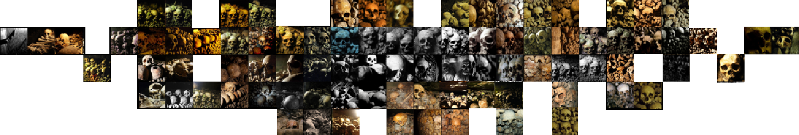
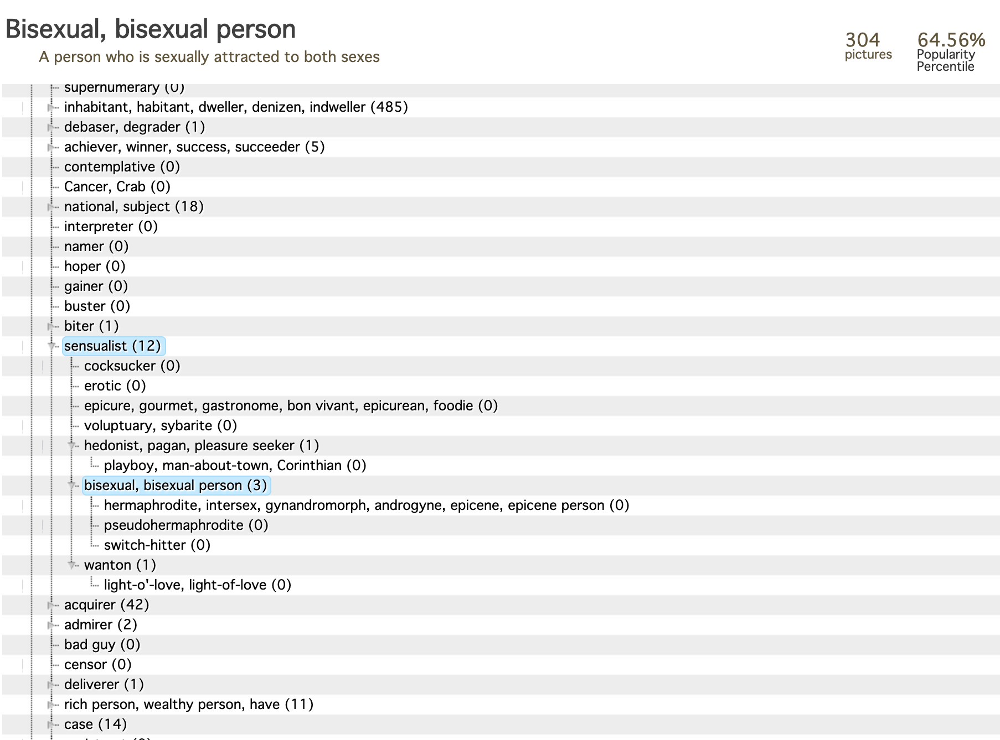
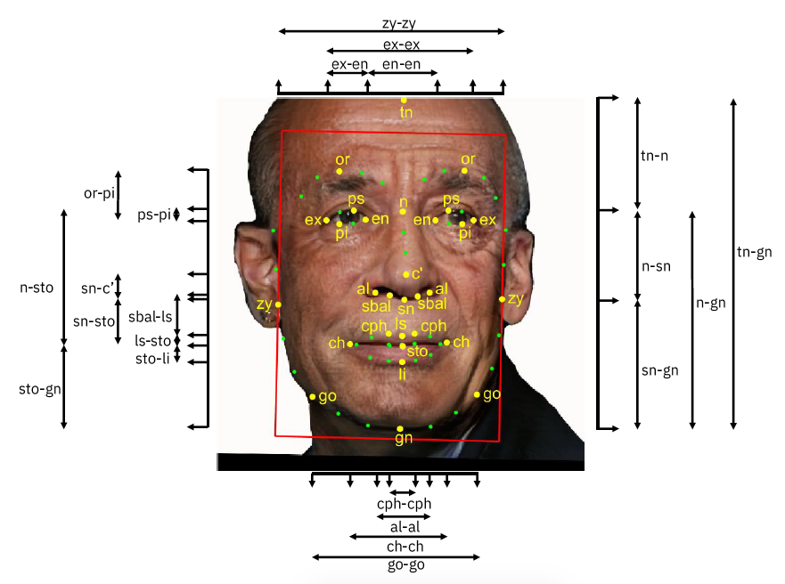
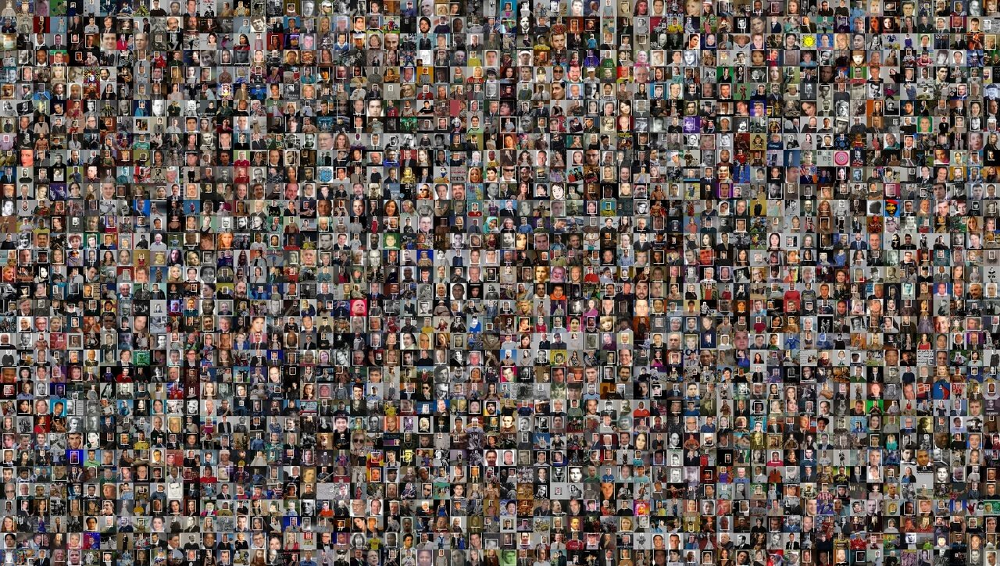
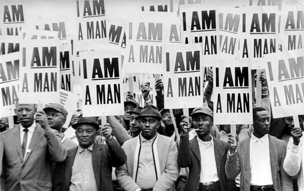

Overview
Dataset archaeology as design critique
Excavating AI is a 2019 digital essay and research project by Kate Crawford and Trevor Paglen. Working through what the authors call an archaeology of datasets, it examines how machine learning systems such as ImageNet are assembled from labeled images, and how the taxonomies used to sort those images quietly encode assumptions, judgments, and biases about people.
The project opens up the training data that teaches AI systems how to see, arguing that these classifications are never neutral. Its value as a precedent lies in the way it treats a technical substrate as a cultural object: something built, named, circulated, and contested.
Image File
Original visuals from the precedent
These images come from the original Excavating AI essay. They are kept as evidence, not decoration: each one shows how the project makes classification visible through interfaces, taxonomies, datasets, and historical counter-images.





Format & Intended Audience
A research essay with exhibition gravity
The work takes the form of a digital essay, research project, and visual investigation of image datasets. It was later published as a peer-reviewed article in AI & Society and extended into the exhibition Training Humans at Fondazione Prada.
Response File
How the project circulated and was contested
-
Simonite, Tom. "The Viral App That Labels You Isn't Quite What You Think." Wired, 2019.
Reports how ImageNet Roulette went viral and revealed biased, problematic labels inside ImageNet.
-
Frieze. "How AI Selfie App ImageNet Roulette Took the Internet by Storm." Frieze, 2019.
Frames the project through art-world and internet reception, focusing on the labels users shared publicly.
-
Wong, Julia Carrie. "The Viral Selfie App ImageNet Roulette Seemed Fun." The Guardian, 2019.
Discusses the experience of being labeled by the tool and the racialized categories it exposed.
-
Lyons, Michael J. "Excavating 'Excavating AI': The Elephant in the Gallery." arXiv, 2020.
A critical response raising concerns about informed consent and how facial-image datasets were exhibited.
-
Lyons, Michael J. "'Excavating AI' Re-excavated: Debunking a Fallacious Account of the JAFFE Dataset." arXiv, 2021.
Continues the critique, challenging the authors' account of the JAFFE dataset.
Interactive Demo
One input, one label
ImageNet Roulette, part of the project, classified anyone who uploaded a photo using ImageNet's person categories. This reduced a whole person to a single label, making the violence of classification visible through a simple interface.